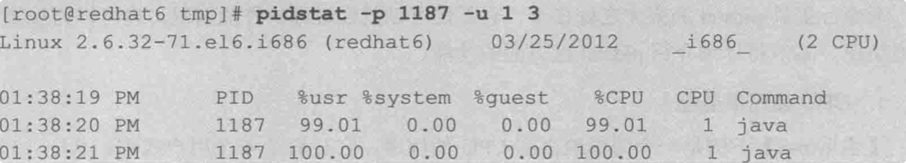
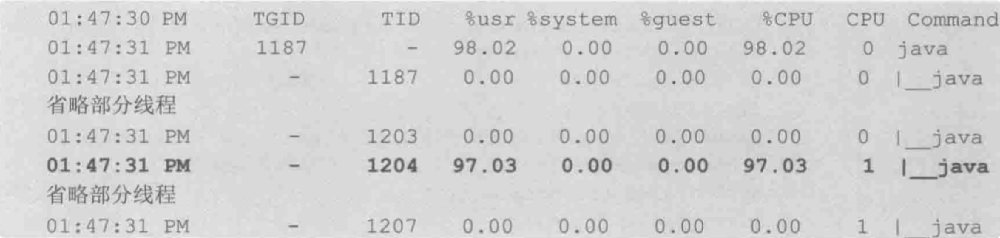
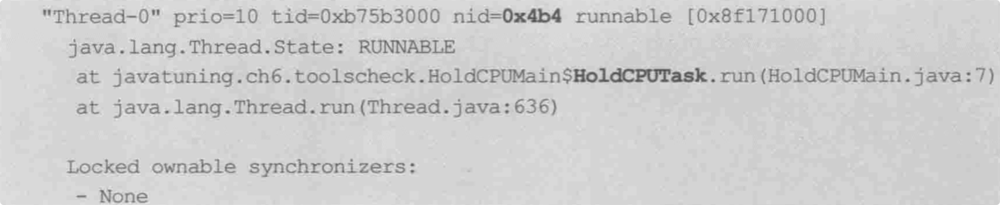

CPU占用过高排查
TOP 工具
使用top命令查看进程各种运行状况，请参考linux和macOS下top命令区别
1、先通过 top 命令找到消耗 cpu 很高的进程 PID

2、执行 top -p PID 单独监控该进程
3、在第 2 步的监控界面输入 H，获取当前进程下的所有线程信息
4、找到消耗 cpu 特别高的线程编号，假设是 2734(要等待一阵)
5、执行 jstack PID 对当前的进程做 dump，输出所有的线程信息
6、将第 4 步得到的线程编号 PID 转成 16 进制是 0x???
7、根据第 6 步得到的 0x??? 在第 5 步的线程信息里面去找对应线程内容
8、解读线程信息，定位具体代码位置，此处可能并不是代码问题引起的cpu占用过高，可能由于 GC 引起频繁的垃圾回收，可使用jstat -gc 250 10查看gc统计情况
pidstat 工具
pidstat 的强大之处在于，它不仅可以监控进程的性能情况，也可以监控线程的性能情况
通过 jps 获取到 java 程序的 PID,然后使用 pidstat 命令输出程序的 CPU 使用情况

pidstat 的参数 -p 用于指定进程ID，-u表示对cpu使用率监控，1 3 表示每秒采样一次，总计3次
从图中可以看出 cpu使用率几乎100%
然后更进一步监控线程信息
使用命令
pidstat -p 1187 1 3 -u -t

参数 -t 将系统性能的监控细化到线程级别。从输出中可以知道，该java应用程序值所以占用如此高的 cpu，是因为 1204 线程的缘故
知道是java程序的哪个线程引起的 cpu 100% 之后，使用 jstack -l 1187 查看线程信息，需要注意的一点是 jstack 的线程ID使用的是 16进制，pidstat 显示的是10进制，需要做一下进制转换
# 查看 java 进程的线程信息
jstack -l 1187

从结果图中看到 0x4b4 正是引起 cpu 100%的元凶，如此 造成 cpu 100%的问题就定位到了
内存占用过高
可以使用jmap命令来查看堆空间信息
打印出排名前20的对象
jmap –histo JVM_ID | head -20

从此命令的返回结果中可以看出排名前几的可能就是引发内存占用过高的对象，进而找出那部分代码出了问题
总结
在 JVM 出现性能问题的时候。(表现上是 CPU100%，内存一直占用)
1、 如果 CPU 的 100%，要从两个角度出发，一个有可能是业务线程疯狂运行，比如说想很多死循环。还有一种可能性，就是 GC 线程在疯狂的回收，因
为 JVM 中垃圾回收器主流也是多线程的，所以很容易导致 CPU 的 100%
2、 在遇到内存溢出的问题的时候，一般情况下我们要查看系统中哪些对象占用得比较多，我的是一个很简单的代码，在实际的业务代码中，找到对应的
对象，分析对应的类，找到为什么这些对象不能回收的原因，就是我们前面讲过的可达性分析算法，JVM 的内存区域，还有垃圾回收器的基础，当然， 如果遇到更加复杂的情况，你要掌握的理论基础远远不止这些(JVM 很多理论都是排查问题的关键)